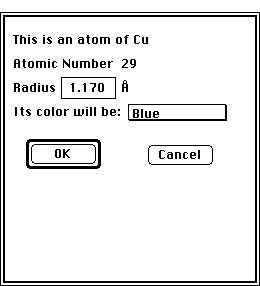
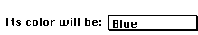
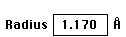

Distributed By: Virtual Labs
Atom Color Dialog Box:
PATH...{Real Lattice}::<<An Atom>>
The Atom Color Dialog Box is activated by double clicking on a displayed
element. Use it to select a color and to change the radius of the given
atom. Unlike, the crystal colors, Desktop Microscopist does not support
a Color wheel for atoms. This enables the ability to have a rendered or
depth cued plot of a real lattice.

Atom Color Dialog Box
This pop-up menu is used to select one of the
seven available colors: Red, Blue, Green, Magenta, Cyan, Yellow or Orange.
The Radius editable text box displays the current radius
used for the atom and allows alteration of this value if desired..i.Real
Lattice:Atom Radius;
Author: J.ames T.
Stanley
 Desktop
Manual:Dialog Boxes
Desktop
Manual:Dialog Boxes
Distributed By: Virtual Labs
Last Updated:1/12/96 Sat, Apr 27, 1996